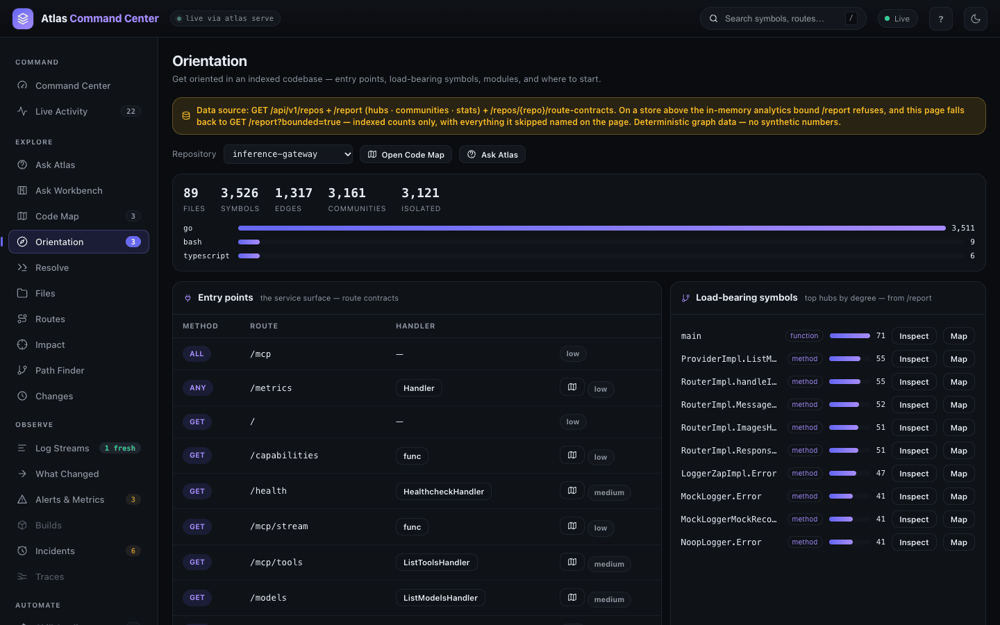

Indexing and Reindexing
Atlas answers are only as current as the selected index. This guide covers creating and updating an index, forcing a rebuild, keeping the graph fresh automatically, controlling what gets indexed, and maintaining the database that stores it. For what the graph contains, see Core Concepts.
Create or Update an Index
Run this once to build the graph, and again whenever you want to refresh it — the same command handles both cases. From a repository root:
atlas index .To pin an explicit database instead of the default sqlite://./.atlas/atlas.db:
atlas --db "sqlite:///absolute/path/.atlas/atlas.db" index .atlas index parses symbols, edges, and routes, then persists the graph and the lexical search index. By default it indexes the working tree; use --ref COMMIT_OR_BRANCH to index a specific commit or branch instead.
Since 0.1.55, uncommitted work gets a snapshot of its own. When the working tree has uncommitted edits or untracked files that Atlas indexes, the run stores a snapshot labelled <sha>+dirty, with a tree_hash of the dirty paths and their content, beside the clean snapshot of that commit instead of overwriting it. The index JSON reports dirty, tree_hash and indexed_sha, and status, history, snapshots list and snapshot-diff show the label. A clean re-index of the same commit still replaces its snapshot in place, and committing the work stores the new commit's snapshot. Files Atlas never reads (its own .atlas/, extensions it does not index, .atlasignore matches) never make a tree dirty. ATLAS_INDEX_DIRTY_IDENTITY=0 restores the old behaviour of labelling the working tree with the clean commit (#65).
A first index of inference-gateway, a Go service of 307 files, looks like this on stderr (the JSON summary goes to stdout):
atlas index: starting path=. db=sqlite://…/.atlas/atlas.db
atlas index: analyzing types (307 files, 11092 symbols) elapsed=2s
…
atlas index: analyzing types (307 files, 11092 symbols) elapsed=24s
atlas index: persisting 11092 symbols elapsed=26s
atlas index: done repo=inference-gateway mode=full files=307 symbols=11092 edges=13900 routes=71 duration=27014ms
atlas index: timings build_symbols_edges=25539ms … go_types=25510ms lexical=795ms lexical_settle=132ms log_sites=9ms parse=115ms persist=438ms …On a Go repository most of a cold index is Go type analysis (go_types); the parse itself took 115 ms here.
What Index Output Reports
Read the index output to confirm what actually happened rather than assuming. With --progress (on by default for human output), Atlas prints start, periodic progress, and completion statistics to stderr. A run reports a delta update when files changed, or a no-op when the stored snapshot already matches the workspace. For profiling an index run, --cpuprofile PATH and --memprofile PATH write runtime/pprof profiles.
Since 0.1.48, atlas index --format json also reports what the run did internally, so you can verify the fast paths engaged instead of inferring it from a stopwatch:
{
"mode": "delta",
"persist_mode": "delta",
"persist_path": "sql",
"delta_base": "dc4dc4ba86e307b8875a4c0b0623b628445d6274",
"files_reparsed": 1,
"lexical_bytes": 290368,
"lexical_settle": "merged"
}| Field | Values | What it tells you |
|---|---|---|
persist_mode | full, delta, noop | which mode the run resolved to. noop means the working tree already matched the stored snapshot |
persist_path | sql, sql_new_commit, whole_graph, full_walk, full_stream, noop | the decisive one. sql and sql_new_commit are the O(change) paths — the base graph is never loaded into memory. whole_graph is the correctness fallback: a delta by mode, a full index by memory |
delta_base, delta_base_snapshot | commit SHA, snapshot id | which snapshot the run built on, so a ladder of runs is pinnable |
files_reparsed | integer | defined for every mode: changed plus added on a delta, every indexed file on a full run, 0 on a no-op |
lexical_bytes | integer | the on-disk size of .atlas/lexical after the run settled it. This should match a du taken the instant index returns; a mismatch is a bug report, not a measurement |
lexical_settle | see below | how the sidecar reached the size reported in lexical_bytes |
Lexical Settle States
The lexical (BM25) sidecar writes new segments and supersedes old ones asynchronously, so a footprint measured the moment an index returns used to read far above the steady state. Since 0.1.48 atlas index settles the sidecar before it returns — a bounded segment merge, then a reclaiming reopen — and reports how that went. The settle never changes the document set and never fails a run; every failure mode degrades to a disclosed state.
| State | Meaning |
|---|---|
merged | the merge completed and superseded segments were reclaimed. Only this state asserts a steady-state footprint |
reclaimed | the merge was skipped or declined, but the reclaim ran. Superseded segments are gone; unmerged ones may remain |
partial | Since 0.1.51. Every step ran and reported success, and then the check found the sidecar still holding obsolete document bytes a compaction would reclaim — a contended machine can leave a whole superseded generation inside one segment, which the engine declines to re-merge. The reported footprint is above steady state. Re-run on a quiet machine, or run atlas compact --rebuild-lexical, before quoting a size |
timeout | the merge did not finish inside its budget, so the reclaim was deliberately not attempted and the footprint may hold both unmerged and superseded segments. Raise ATLAS_LEXICAL_SETTLE_TIMEOUT (default 30s) and re-run |
skipped | there was nothing to settle: no sidecar, or this run wrote no documents |
failed | the settle itself errored; the reason is on stderr and the footprint is still reported |
off | disabled with ATLAS_LEXICAL_SETTLE=off |
Set ATLAS_LEXICAL_SETTLE=reclaim to skip the merge and only reclaim — the cheaper mode for very large sidecars where a single-segment merge is not worth its write amplification.
Running the same command again on an unchanged tree is a no-op — this is the real second run on inference-gateway, trimmed:
$ atlas index . --format json
{
"repo_full_name": "inference-gateway",
"commit_sha": "524967508e9d90185c4a1c3540cac0dcda7c580a",
"indexed_files": 307,
"symbols": 11092,
"edges": 13900,
"routes": 71,
"mode": "noop",
"duration_ms": 69,
"persist_mode": "noop",
"persist_path": "noop",
"delta_base": "524967508e9d90185c4a1c3540cac0dcda7c580a",
"files_reparsed": 0,
"lexical_bytes": 6991343,
"lexical_settle": "merged"
}Incremental Behavior
Incremental updates are the default because they are much faster than full rebuilds: Atlas computes a delta against the previous snapshot and reindexes only what changed. To diff against a specific commit rather than the stored base, pass --base COMMIT.
Since 0.1.55, a new commit costs what it changed. The lexical sidecar is carried forward per snapshot, so a new commit re-streams only the changed files' documents, and the shapes that used to rebuild the whole graph — adding or deleting JS/TS, Python, C, C++ or Rust files, deleting a Go file, turning Go type analysis off, fact-changing header edits — run on the SQL delta path (persist_path: sql_new_commit) with bounded passes after the commit (#128). A delta and a fresh full index of the same commit hold identical symbols, edges and file rows (#118).
Because uncommitted work is now its own snapshot, an edit to a dirty tree takes that same new-commit path (copy forward, then retire the superseded dirty snapshot) instead of rewriting a snapshot in place. Watch mode on a large repository therefore pays roughly what a new commit costs for each edit; set ATLAS_INDEX_DIRTY_IDENTITY=0 if that matters more than an honest label (#65).
Imports and Cross-File Types
Atlas proves which file a name comes from before it counts a cross-file relationship, and fails closed when two files could answer. Since 0.1.55 the proof reaches further:
- Python.
from X import A, Bkeeps the module row plus one row per binding, markedimport_binding/import_module, andexportfolds the bindings onto one edge per statement. Parenthesized imports are read from the syntax tree, andfrom . import foostores.foo(#126). - Go. Imports resolve through
go.mod— nested modules and in-reporeplacedirectives included — to the package directory (resolved_kind: package_dir); an in-module path with no package is markedmodule_not_found, and the standard library and third-party modules fail closed. A delta refreshes the resolution when a package directory is added or removed orgo.modchanges (#126). Package-level variables carry their initializer call, their writes and an inferreddeclared_type(#55). - Scala. Each import selector resolves by Scala's lookup order and gains
resolved_pathonly when exactly one file declares the target under a verified package clause (#137); type uses, universalapplyand companions resolve through the same imports (#21). - PHP.
useclauses are read per namespace region, one row per clause, so grouped and aliased imports prove their class, anduse function/use constresolve only to functions and constants (#139). Class constants, static properties, container and event rows prove their class too (#24). - Java. Same-package, single-type and on-demand imports resolve type uses, and method return types, field types and annotation element types are references (#34).
These facts are written when a file is indexed, so an existing store shows them after one atlas index . --reindex.
Images
An image is a searchable file-level entry, never a call-graph node. Since 0.1.55 its entry holds the text the file itself carries — PNG text chunks (including XMP) and EXIF, JPEG EXIF/XMP/IPTC/comments, TIFF text tags, WebP EXIF/XMP and GIF comments — plus its format and size, so a title or caption embedded in an image is found by search (#26). Binary data is never read as text.
Text drawn in the pixels needs OCR, which is opt-in. Set ATLAS_IMAGE_OCR_CMD to a command that reads one image on stdin and prints its text; it runs without a shell, with the repo-relative path in ATLAS_IMAGE_PATH, for at most 30 s per image:
export ATLAS_IMAGE_OCR_CMD="tesseract - stdout"
atlas index . --reindexEvery image entry states ocr_status (off, ok, empty, unavailable or failed), and its signature says ocr: <status> whenever no OCR text was indexed, for example fixture.png png 320x60 ocr: off Title: ATLAS VISION TOKEN 7842. Images already indexed keep their text until they are indexed again with --reindex.
Forced Rebuild
Use --reindex only when the incremental path cannot repair the index:
atlas index . --reindexThe legitimate reasons for a full rebuild are:
- An upgrade reports an incompatible or stale index format, or
atlas doctorrecommends a rebuild. - Parser or language support changed and old files must be reparsed.
- The workspace identity or indexed root was incorrect, or focused troubleshooting confirms the current index is incomplete.
Do not make forced reindexing the default workflow. It is slower and discards the benefit of incremental updates.
Watch Mode
Use watch mode when you want the graph to stay fresh during active editing with no manual atlas index runs. atlas watch indexes the repo once, then watches the working tree and runs an incremental, working-tree-aware update on every file change. A burst of edits is coalesced into one update (--debounce-ms, default 250). It runs in the foreground until interrupted.
atlas watch .The MCP and HTTP surfaces maintain freshness the same way — atlas mcp and atlas serve watch the repo by default. Disable watching when another process owns indexing:
atlas mcp --supervise --watch=false # or set ATLAS_NO_WATCH=1Semantic Vectors (Optional)
Enable vectors only if you want embedding-based retrieval; the deterministic lexical and graph core never depends on them. Run the optional embedding pass at index time:
atlas index . --enable-vectors
atlas watch . --enable-vectors # keep embeddings fresh on each updateWith vectors enabled (ATLAS_ENABLE_VECTORS=1 and a repo indexed with --enable-vectors), atlas semantic-search returns nearest symbols by cosine similarity. Otherwise it transparently degrades to lexical search and reports degraded=true / mode_used=lexical. By default the embedder is offline (deterministic token overlap); set ATLAS_EMBED_URL to use a real embedding model. See Configuration.
Excluding Files
Exclude generated outputs, dependency caches, and nested repository snapshots so they do not pollute search results. Atlas skips paths git ignores by default (--gitignore, default true); pass --gitignore=false to index everything. Add Atlas-specific patterns to:
.atlasignoreRegistering Without Indexing
Use atlas link when a repo should participate in cross-repo queries and appear in atlas status before (or without) being indexed on this machine:
atlas link org/name --branch mainREPO may be a filesystem path, a git remote URL, or a bare org/name. Linking is idempotent — re-linking updates the registration and reports created=false. Linking does not populate the graph; run atlas index for that. To remove a repo from the registry, atlas repo rm forgets it entirely: snapshots, symbols, edges, embeddings, and lexical documents.
Performance Envelope
Since 0.1.48, resource use is a profile decision first. Atlas detects a machine profile — eco, balanced, performance, or turbo — and sizes indexing to it. The individual knobs below all still work and all still win over the tier; they are overrides, not the primary control. Pin a tier with ATLAS_PROFILE and read back what it installed with atlas doctor; the tiers, their values, and the auto-detection rules are in Configuration.
Since 0.1.51, the one rule that matters most while indexing is: balanced bounds background work, not the index you are waiting on. A watch-triggered refresh or an MCP lazy index runs inside a warm daemon and takes 3/4 of the cores under a RAM/4 soft heap limit; an explicit atlas index you typed runs at full width with no ceiling. eco is deliberately not scoped that way — on a genuinely low-spec box it throttles foreground indexes too, because that is the case it exists to protect.
Behaviors worth knowing on large or memory-constrained machines:
- Streaming index (v0.1.42+). Full indexes of repos over ~15,000 candidate files automatically stream in bounded batches instead of holding the whole graph in memory — the Linux kernel (81k files, 1.86M symbols, 6.8M edges) indexes at ~1.3 GiB peak RSS. Force it at any size with
ATLAS_STREAM_INDEX=1(or off with0); tune withATLAS_STREAM_INDEX_THRESHOLDandATLAS_STREAM_INDEX_BATCH. - CPU ceiling (v0.1.43+; an override since 0.1.48). With no profile bound in force the parse/hash pool uses all cores, so a large index can saturate the machine (a Chromium index drove one reporter's CPU past 300%). Cap it explicitly with
atlas index --workers NorATLAS_INDEX_WORKERS— e.g.--workers 4trades a little wall-time for headroom, and1pins the run to a single core. An explicit value always beats the tier's worker count. (Go repos also rungo/types, which spawns its own compilers outside this pool; C/C++/other tree-sitter languages are fully bounded by it.) - Memory ceiling (an override since 0.1.48).
ATLAS_MEMORY_LIMITandATLAS_GOGCbound the Go runtime directly and override whatever the tier would have set — the right tool for a container with a hard cgroup limit, where you want a specific number rather than a fraction of host RAM. - Deletions no longer rebuild the graph (since 0.1.55). Deleting a Go file used to force the whole-module type-check fallback, and adding or deleting JS/TS or Python files took the whole-graph path. Those shapes now run on the SQL delta path: on TensorFlow a one-line Python edit went from 1,528 MB / 36 s to 529 MB / 13 s, and adding a
.ccfile beside JavaScript from 8.5 GB / 184 s to 752 MB / 24 s (#128). Undereco, SQLite's caches and memory map are bounded as well (see Configuration).
Database Maintenance
Run maintenance when the database has grown or after an Atlas upgrade.
atlas compactreports reclaimable pages and truncates the WAL. Modern Atlas databases use online incremental auto-vacuum; legacy databases are converted with a one-time full VACUUM that takes an exclusive lock — stopatlas serveand watch processes first, or you get a lock error rather than partial work.atlas compact --fulladditionally runs a full VACUUM and rebuilds the lexical (BM25) sidecar when it has outgrown its size bound — the only way dead segments are returned to the OS. Exclusive: quiesce other Atlas processes first.atlas compact --rebuild-lexicalrebuilds the lexical sidecar regardless of size — the fix for an empty or wedged sidecar, which otherwise silently degrades every search to SQL-only.atlas doctorreports when you need it.atlas migrateapplies storage migrations and reports the active contracts. Bothmigrateandcompactaccept--all --root DIRto process every local.atlas/atlas.dbunder a directory.
Verify Freshness
Confirm which index is answering before trusting results:
atlas status
atlas stats
atlas doctorWhen multiple repositories or databases exist, pin both --db and --repo. If a running Atlas server is configured, CLI queries may use that server — unset ATLAS_SERVER_URL or pin an explicit database while diagnosing.
$ atlas stats
stats inference-gateway local/sqlite history 1 coverage_facts 0
latest 52496750 mode full files 307 symbols 11092 edges 13900 routes 71 53534ms
store_rows files 307 symbols 11092 edges 13900 routes 71
graph files 89 symbols 3526 edges 1317 communities 3161 isolated 3121
langs go:3511 bash:9 typescript:6Since 0.1.55 the plain stats output also prints a health line (isolated ratio, connected components, the community split), an edge_binding line and an invariants line, and atlas status --repo <path> scopes the status report to one repository; the CLI reference describes each. Every answer also carries its own indexed_sha, head_sha and stale fields, so a lookup tells you when the index lags the checkout (#59).
store_rows is what the index stored. graph is what the graph report reads — the same numbers the dashboard's Orientation view (#/orient) shows at the top, beside the repository's entry points and its most-connected symbols:

To walk what was indexed file by file, open Files (#/files). Type in the filter to narrow the tree by path or symbol name, then click a file: the details panel lists the routes it serves, its imports and the symbols in it, with caller and callee counts.
The counter beside the filter says how much of the index the view loaded. On a large repository the first load is a sample; expanding a folder fetches that folder in full.
Safe Recovery Order
Follow this order so you never destroy data a cheaper step could have fixed:
- Stop active
serve,watch, and supervised MCP processes. - Run
atlas statusandatlas doctor. - Confirm the repository and database paths.
- Run
atlas migratewhen a schema upgrade is required. - Rebuild lexical data only when recommended.
- Run
atlas index . --reindexas the final non-destructive repair. - Delete
.atlasonly when a complete data reset is intended.
See Troubleshooting before removing data.